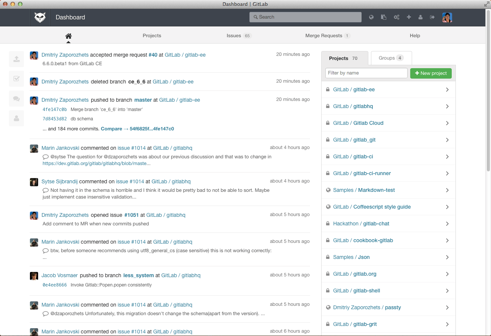

Developers
Super groups with GitLab
A super group is a directory of code on a server. Editing that code on a live hub means editing production by hand. The alternative the CMS supports is to keep each group's directory in a GitLab repository: developers work on a copy, propose changes as merge requests, and an administrator pulls the approved result into the hub from the administrator interface.
This section covers what the CMS does, what a hub has to configure, and how a developer works against a group that is managed this way.
What ships and what does not
GitLab is a separate application. Nothing in this repository runs one, and no hub gets one by installing the CMS. What ships is a client:
core/components/com_groups/helpers/gitlab.php— a small REST client over Guzzle that can search for and create GitLab groups and projects and protect a branch.- The super group tasks in
admin/controllers/manage.php— creating the project when a group is saved, and the Update Groups Code and Merge Groups Code screens. - Shell scripts in
admin/assets/scripts/that do the git work on the server.
The integration is off by default and does nothing until a hub sets
Repo Management, a Repo URL and a Repo API Key. Even then the
project-creation half only runs on a hub whose application_env starts with
production.
Everything on the GitLab side — accounts, forks, merge requests, review, the web interface — is that application's, not the hub's. This section says plainly which parts of the old workflow could be checked against this code and which could not.
The chapters
| Chapter | What it covers |
|---|---|
| Why GitLab | What the arrangement buys, and what the hub actually enforces |
| Setup | The hub-side options, and what happens when a group is saved |
| Developing | The fork, clone, merge request and pull cycle |

In this section
Rewritten and checked against 2.4-main @ ab49f763b0 on 2026-09-09.